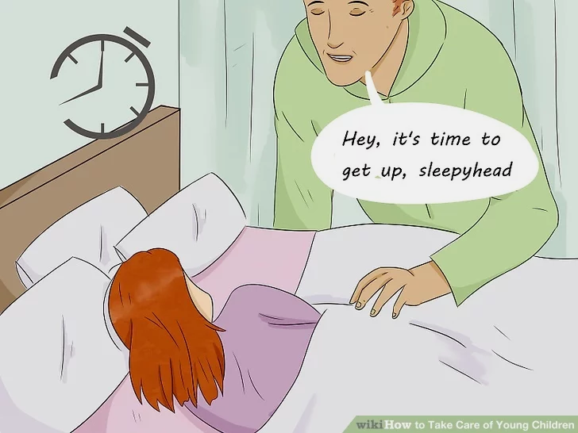
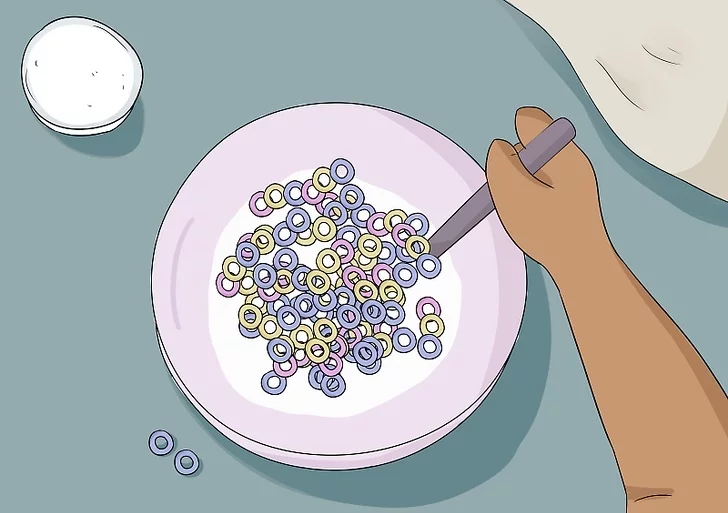
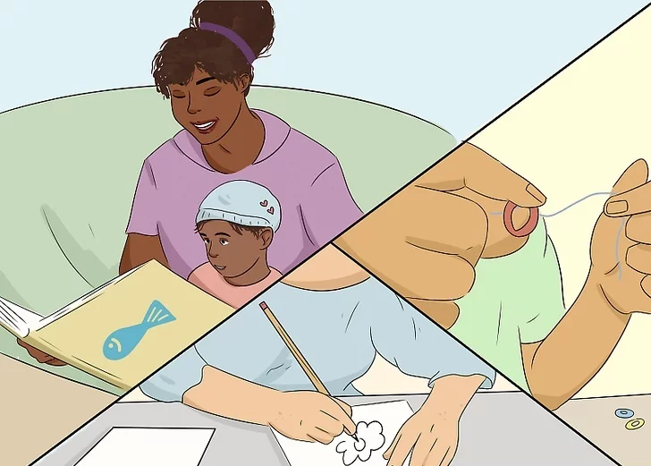
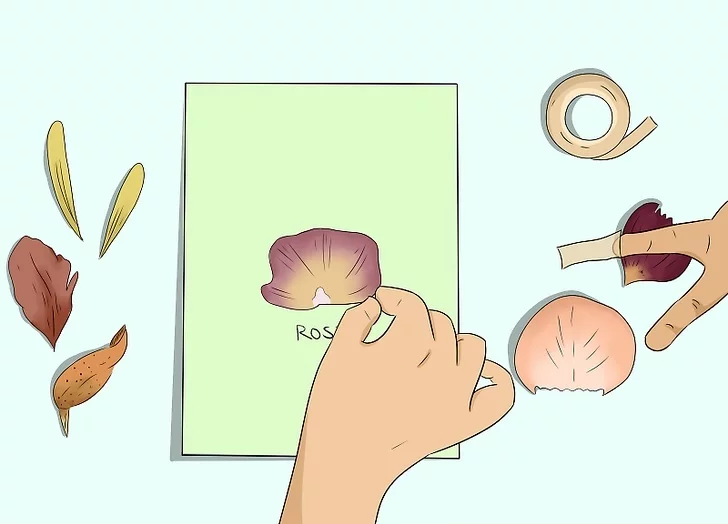
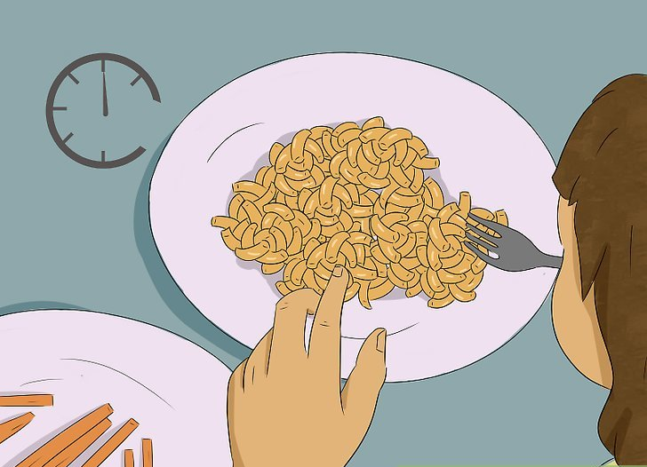
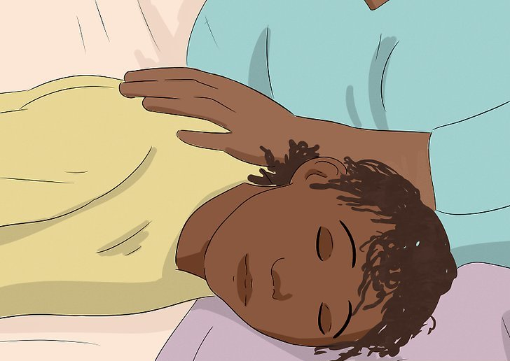

It is clear that building a good parent-child relationship is the best way to keep your kids on track. But there are many more benefits to the same. Here are some of them:
| KANGAROO | BOYS | GIRLS | ||
|---|---|---|---|---|
| Months | Weight(kg) | Height(cm) | Weight(kg) | Height(cm) |
| 0 | 2.5-4.3 | 46.3-53.4 | 2.4-4.2 | 45.6-52.7 |
| 1 | 3.4-5.7 | 51.1-58.4 | 3.2-5.4 | 50.0-57.4 |
| 2 | 4.4-7.0 | 54.7-62.2 | 4.0-6.5 | 53.2-60.9 |
| 3 | 5.1-7.9 | 57.6-65.3 | 4.6-7.4 | 55.8-63.8 |
| 4 | 5.6-6.6 | 60.0-67.8 | 5.1-8.1 | 58.0-66.2 |
| 5 | 6.1-9.2 | 61.9-69.9 | 5.5-8.7 | 59.9-68.2 |
| 6 | 6.4-9.7 | 63.6-71.6 | 5.8-9.2 | 61.5-70.0 |
| 7 | 6.7-10.2 | 65.1-73.2 | 6.1-9.6 | 62.9-71.6 |
| 8 | 7.0-10.5 | 68.5-74.7 | 6.3-10.0 | 64.3-74.7 |
| 9 | 7.2-10.9 | 67.7-76.2 | 6.8-10.7 | 66.8-76.1 |
| 10 | 7.5-11.2 | 67.7-76.2 | 6.8-10.7 | 66.8-76.1 |
| 11 | 7.4-11.5 | 70.2-78.9 | 7.0-11.0 | 68.0-77.5 |
| 12 | 7.8-11.8 | 71.3-80.2 | 7.1-11.3 | 69.2-78.9 |
Young children, ranging from toddlers to those who have just started school, are all different in their own way. That's why you as a parent, guardian, relative, or babysitter play a crucial part in their development. Not only are you helping their fine, gross, and motor skills develop, you're shaping their perspective of life and their surroundings each and every time you are with them. Taking care of a young child might seem challenging at first, especially with all of the tantrums and crying, but by the end of the day you'll be a pro. Read on to discover how you can take care of young children!
 
STEP 1: Wake the children up at a set time every day. This can easily be adjusted when necessary, but start with a time such as seven thirty or eight in the morning. You can have an alarm go off for the children to wake up to, such as a favorite children's
song or a soft bell. Avoid something too loud, such as a rooster crowing or rock music. If they don't wake up right away, you can gently tap them and say something such as,
"Hey, it's time to get up, sleepyhead". Once they are awake, you can start
getting them ready for the day by getting them dressed, doing their hair, and brushing their teeth. Let the kids feel responsible and a part of their routine by giving them options.
You can lay out two shirts and let them choose a shirt, let them
choose to wash their face or brush their teeth first, or allow them to either help you set the table or get you the food you need from the refrigerator.
STEP 2: Feed them a healthy, nutrition-filled breakfast. Breakfast is the most important meal of the day, enabling a child to have strength to last them throughout the day. Allow them to help you with a simple task they can accomplish: they can hold the cups
while you pour the milk, or assemble their own yogurt parfait. The following are good breakfast ideas you and the young children can enjoy:
Yogurt Parfaits: All you need for this is vanilla or plain yogurt, blueberries, cut-up strawberries, and granola. Let each child make their own parfait, even if they add a little too much granola on top.
Special Toast: Of course, you can pop some bread into the toaster, spread jam or peanut butter on it, and serve the kids that. But who wants to be boring? Once the bread's toasted and you've got your spread on it, get everyone involved by
making faces on it! Use apple slices for the mouth, grapes for eyes, and blueberries for the mouth.
Eggs and Bacon: You can easily crack several eggs in a bowl, mix them together, and cook them to make a large batch of scrambled eggs for breakfast. Bacon's easy to cook as well; just follow the directions on the package.
Cereal: Ah, every kid's favorite. Avoid cereals with a high content of sugar, unless you want the kids bouncing on the walls! If the kids have any dairy allergies or are lactose intolerant, substitute normal milk for milk made out of almonds,
cashews, soy, or coconuts.
Fruit Salad: Cut up any type of fruit that you'd like to incorporate into the salad (e.g. apples, orange slices, grapes), then let the kids stir in whipped topping or powdered milk. If you don't have either, vanilla yogurt works!
STEP 3: Begin play time! Vary each activity you do, since young children tend to get bored very easily. Don't get mad if things stray a little off course; remember to just roll with it and have fun! Here are some ideas:
 
STEP 4: Incorporate informal learning into playtime. Want to encourage learning without the children knowing? Here are some educational but fun activities:
STEP 5: Serve lunch around midday. Again, allow the kids to help out whenever possible. You can make ham and cheese sandwiches (cut the bread with a cookie cutter to make the bread look cool), mac n' cheese, chicken nuggets, or crackers with luncheon meat
and cheese. Add healthy sides, such as a cheese stick, carrot sticks with ranch dressing, strawberries, or applesauce.
STEP 6: Prepare for nap time! Once lunch is over, the children will need a nap. Set them on their beds or on the couch with a pillow, a blanket, and their favorite stuffed animal. Turn on calming music, or white noise, on your phone; and limit your noises as the children sleep.
While they nap, you can either sit in the room and nap with them or accomplish a few things as long as you keep quiet. Though you might want to make a phone call or do your nails, that can most likely wait until later.
Location
Hours
Contact
No 618, Kangroo Clinic, Monday-Friday 08136-245989 Gangamma Temple St, 10:00 am - 6:00 pm +91 9980666370
Basvangudi, Bengaluru,
Karnataka 560019